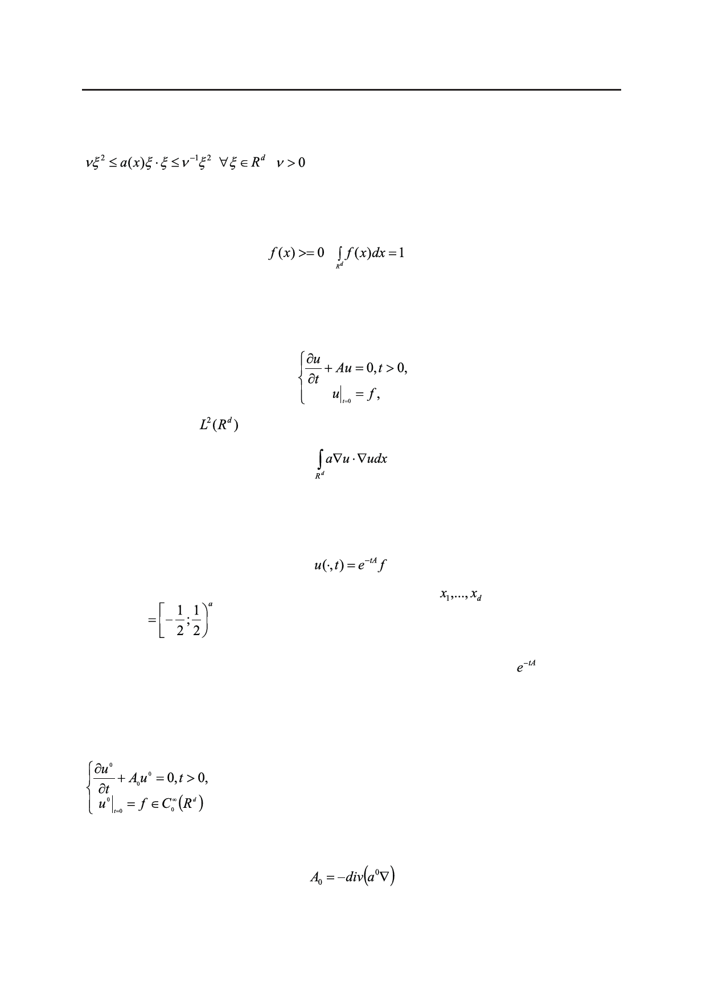

Асимптотика решения уравнения диффузии в периодической среде на больших временах
и ее применение к оценкам усреднения
с измеримой вещественной симметрической матрицей a(x) такой, что
,
,.
(2)
Задача (1) моделирует диффузию в неоднородной среде, a(x) называют матрицей
диффузии. Решение u(x,t) можно интерпретировать, например, как плотность распреде-
ления некоторой случайной величины в момент времени t. При этом подразумевается,
что начальное распределение
,
.
На первый взгляд, рассматриваемое уравнение не содержит малого параметра. Ма-
лый параметр появляется естественным образом, если изучить поведение решения u(x,t)
при больших значениях времени t, т.е. при t → +∞.
Задача (1) допускает операторную запись
где A – оператор в
, заданный квадратичной формой
,
область определения которой есть соболевское пространство H1(Rd). Квадратичная форма
является замкнутой, а сам оператор A – неотрицательным и самосопряженным. Решение
задачи Коши (1) запишется через экспоненту (или полугруппу) оператора A, а именно,
.
Пусть матрица периодична по каждому переменном
с периодом 1, единич-
ный куб □
есть ячейка периодичности. Тогда известно асимптотическое пове-
дение решения u(x,t) при t → +∞, и это поведение можно сколь угодно точно описать.
Иными словами, известно асимптотическое поведение полугруппы при большом
значении времени.
На больших временах за поведение полугруппы прежде всего отвечает постоянная
усредненная матрица диффузии a0 (формулы для ее отыскания по исходной матрице a(x)
ниже, см. (10), (11)), и надо рассматривать усредненную задачу
(3)
с оператором диффузии
,
где матрица диффузии a0 постоянна.
62
Российский технологический журнал 2017 Том 5 № 5